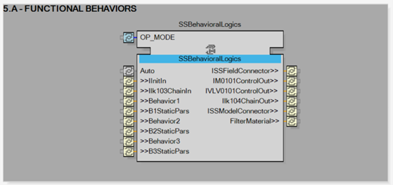

The most important part of the Frame-5 is to implement the behavior logic of the sub-system with the SSBehavioralLogics CAT. This CAT is the one defining the automation intelligence of the unit.

With the other functionalities distributed in the other frames, the interface of the CAT is designed for easy configuration and operational use:
Inputs:
One input to communicate the currently set operation mode, here Auto to transmit the value AUTO or MANUAL.
One initialization input adapter, here IInitIn.
Zero or more interlocks input adapter, here Ilk103ChainIn.
One input for the static parameters and one to interact (bi-directionally) with the behavior logic itself for each functional behavior. Here there are Behavior1 with B1StaticPars, Behavior2 with B2StaticPars and Behavior3 with B3StaticPars.
Outputs: (to create appropriate communication path between the logic of the sub-system and the field)
One output for each Children sub-system to interact with them, here IM101ControlOut and IVLV101ControlOut.
Two outputs to communicate with the field interface and the IT / OT interface, here ISSFieldInterfaceConnector and ISSModelConnector.
If needed, one output to send interlock chains where needed, here Ilk104ChainOut.